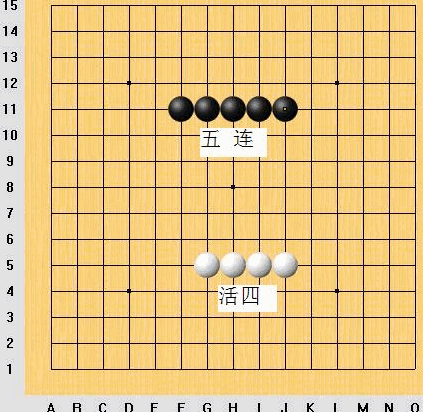
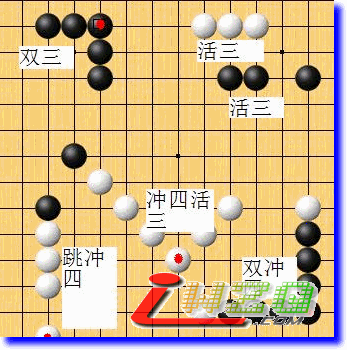
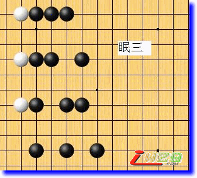
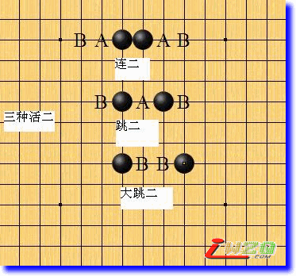
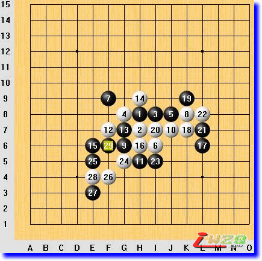

五子棋理论入门知识
#1 五子棋理论入门知识 作者：有志青年 发表时间：2008-9-7 12:44:40
清风[图说棋理]五子棋知识帖子目录 ShowPost.asp?ThreadID=4541
代序
我以前发了几十篇帖子来介绍五子棋知识，为了方便大家阅读，专门整理了帖子目录，但最近发现那篇《目录》帖子限制字符数量，不能无限添加内容了，所以五子棋入门知识这一部分我准备在这一个帖子的回复中不断向大家介绍，如有问题可以加我qq好友来讨论，qq号码：812047397，谢谢大家支持！
在正式介绍五子棋入门知识之前，要先说明一点，我认为五子棋和连珠是两个很相似的游戏，并非一种棋，所以在我的介绍中不涉及“禁手”内容，很多术语的含义也不同于连珠。不知连珠和禁手为何物的朋友也不必向我询问，我只告诉你我现在介绍的就是你以前熟悉的那种五子棋游戏。
我所讲的内容只是一些理论性的，不讲棋谱，原因之一是现在流行的大多数棋谱都是连珠棋谱，五子棋棋谱很少；原因之二是学习棋谱也是为了学其中蕴含的理论知识，我这里就直接讲理论知识了，理论的运用可以参看实战解析。
#2 Re:五子棋理论入门知识 作者：有志青年 发表时间：2008-9-7 12:48:02

所有点开这篇帖子看的朋友，想必你以前一定下过五子棋，也知道五子棋胜负评判标准，就是首先在一条直线或斜线上同色棋子连成五个或者五个以上的一方为胜，另一方自然就为负了。学习五子棋都是为了取胜，那我们就从五子棋的取胜开始讲起。
首先我们要学习一些五子棋术语，因为只有准确理解这些术语的含义，才能正确理解那些用术语来阐述的棋理。
我们把五子棋最后取胜的那五颗或五颗以上同色棋子称为“五连”，形成五连即为胜，一切战略战术都是为最后形成五连服务的。
五子棋是两个人轮流落子来下的，当自己即将形成五连的时候，对方必然会在即将形成五连的线路上落子，这样用不同颜色的棋子来阻挡同色棋子五连的形成，己方要怎样才能不可避免地形成五连呢？必走的一步是抢先形成两头没有对方棋子（或者棋盘边缘，下同）阻挡的连续的四颗同色棋子，这样，无论对方阻挡那一头，己方都不可避免地在另一头落子形成五连取胜，我们把这样的“两头没有对方棋子阻挡的连续的四颗同色棋子”叫做“活四”。
那位看官要问了：活四难道是那么容易形成的么？别急，呵呵！且听下回分解！
#3 Re:五子棋理论入门知识 作者：有志青年 发表时间：2008-9-7 12:49:13

活四是那么容易形成的吗？说难也难，说易也易，当符合一定的条件的时候，对方是没有机会阻挡你形成活四的。
什么条件呢？比如你在一条横线上形成两头没有对方棋子阻挡连续三颗子，形成这个形状的最后一手棋同时在竖线上也形成一串两头没有对方棋子阻挡的连续三颗子，这时候对方只能落一颗子防守，你就能在横竖之中的一条线上形成活四了。我们把（在没有对方干涉的情况下，下同）下一手棋能够形成活四的棋形叫做“活三”。活三分为“连三”和“跳三”，它们下一手棋都能形成活四。一颗子同时形成两个活三叫作“双三”。
再比如你在一条斜线上形成对方阻挡了一头的四颗子，形成这形状的最后一手棋同时在另一条斜线上形成一个活三，对方为了避免你成五连，必须去当你的那个四颗子的棋形，这时候你的那个活三就能走成活四了。我们把对方阻挡了一头的这四颗子叫做“冲四”，同时形成冲四和活三的那个棋形或那步棋叫做“冲四活三”，只要对方挡你冲四的那步棋没有形成他的冲四，你的活三就能走成活四，你就赢定了。
补充一下，活四并不是形成五连的唯一途径，如果你能够一手棋同时形成两个冲四，也就不可避免地会形成五连了，我们把一手棋同时形成两个冲四叫作“双冲四”。
冲四不一定要挨着摆，有时候根据需要可以隔着一个空格来冲四，我们把这样的冲四叫作“跳冲四”。
#4 Re:Re:五子棋理论入门知识 作者：有志青年 发表时间：2008-9-7 12:50:47

前面我们讲到了冲四，我们把下一手棋能够冲四的棋形叫作“眠三”。眠三的形状很多，你就记住只要该自己走了自己就能够去冲四的棋形，那就是眠三！
#5 Re:Re:Re:五子棋理论入门知识 作者：有志青年 发表时间：2008-9-7 12:51:22

前面啰里啰唆地说了很多，我们需要来做一个小结，免得以后学得乱了套。
不可避免实现五连的途径有两类：活四和双冲四；而不可避免实现活四的途径又分类两类：双活三和冲四活三。
好，在这个小结的基础上，我们再做更深入的分析。上述各类取胜途径中，使用到的手段有冲四和活三两种。要实施冲四，棋盘上必须要有眠三，眠三的形状在5楼已经介绍；要实施活三，棋盘上必须要有什么样的棋形呢？
请看图示，图上的所有棋形下一步都能形成活三，我们把所有下一步能形成活三的棋形叫作“活二”。活二分为三种：连二、跳二和大跳二，它们的形状不同，能形成活三的能力也不同。
连二，既能形成连三，又能形成跳三，它能形成活三的点有四个；跳二，也是既能形成连三，又能形成跳三，它能形成活三的点有三个；大跳二，只能形成跳三，而不能形成连三，它能形成活三的点有两个。图上所示A点都是形成连三的点，B点都是形成跳三的点。
活二，不仅仅能形成活三，如果需要，它还可以形成眠三。图上棋形向A、B点之外的两头再延伸一格，形成的就是眠三了。
#6 五子棋理论入门知识 作者：有志青年 发表时间：2008-9-7 12:52:03

为了使前面所讲到的术语概念在头脑中具体化，我从QQ五子棋无禁手一区随机选取了一盘很平常的对局，来说明前面所讲棋形在实战中是如何出现的。
黑棋先行，黑1下在棋盘中央，棋盘中央这一点有个名称，叫做“天元”。黑方占有先行优势，白方刚开始应该采取防守战略，或直或斜紧贴着黑1落子，是强有力的防守。黑3与黑1形成的棋形就是活二，具体说是活二中的连二。
白4阻挡黑棋的活二，同时与白2形成的棋形是一个斜线上的连二。黑5如果下在I6，阻挡白棋的活二，同时和黑3形成的就是跳二，但实战黑5下J8，与黑1、黑3形成的棋形就是眠三，如果白棋不挡，黑棋在K8、L8两个点都可以冲四（当然不一定马上就冲四）。
白6下I6，与白2、白4形成的棋形就是活三，具体说是活三中的连三，这时候黑棋可以下F9或J5做防守，也可以在K8或L8冲四，如果黑棋冲四的话，白棋是不能继续把自己的活三走成活四的，因为黑棋的冲四形成五连更快，我们把这个特性称作“进攻级别”更高。
实战黑7在F9防守，是因为黑7如果走冲四，白棋必然防守，之后黑棋还是要防守白棋的活三，因为如果黑棋去做活二，白棋的活三就能形成活四，黑棋就输了。这说明活三的进攻级别要比活二高。黑7阻挡一头后，白4、2、6这三颗子的棋形成了一个眠三。
白8在K8挡住黑棋的眠三，同时与白6形成的棋形就是斜线上的跳二。黑9没有阻挡白棋的活二，也没有阻挡白棋的眠三，下在了G6，目的是防止白棋在这个点一颗子同时形成两个活二。在布局阶段某一方活二的数量迅速增加的话，就比较容易产生前面所讲的双三、冲四活三等等的手段了，所以这个黑9是防止白棋活二数量的迅速增加。
白10在J7活三，同时和白2形成了一个跳二，这种在进攻中同时形成活二的技巧是很有效的，能最大限度地保持进攻的连续性。
黑11挡住白棋的活三，同时和黑9形成斜线上的活二，这是在防守中增加进攻力量的技巧，我们在实战中也要学会使用。
白12挡住黑棋刚形成的这个活二，同时和白4形成一个活二，并且和白2、白10形成了一个眠三。
黑13阻挡白棋刚形成的眠三，同时与黑1又形成了一个活二。
白14H9活三，黑15E6阻挡，同时与黑9形成了一个跳活二。白16H6单纯防守，没有形成活二、眠三之类的进攻棋形。
黑17下在L6，与黑5形成一个斜线上的跳二，这个跳二与黑1、黑13形成的那个活二有着密切的联系，那就是在I9点能形成双三。这时候白棋可以挡住那个双三点，也可以破坏这两个活二中的任何一个，黑棋就不能形成双三了。
实战白18下K7，破坏黑棋刚形成的这个跳二，同时与白8形成一个活二，并且与白2、白10形成一个眠三。
黑19K9阻挡白棋的活二，同时与黑5形成一个活二。白20I7冲四，阻挡了黑棋刚形成的活二，黑21是必须要下L7的，否则白棋就形成五连了，我们把白20这种迫使对方必须防守的手段叫做“绝对先手”，把黑21这种只有一个防守点可以选择的防守叫做“唯一防守”。
白22挡住黑棋的活二同时形成活二（以下简称挡二活二）。黑23I5活二，白24G5挡二同时形成眠三。黑25E5，和黑13、黑1形成活三，同时和黑15形成活二（以下简称活三带二），白棋没有防守，白26下F4冲四，这时候因为冲四的进攻级别比活三要高，是个“绝对先手”，黑棋27是不能去把活三走成活四的，必须在E3做“唯一防守”，但是注意看，这个防守同时与黑25、黑15形成了一个跳三，这样，棋盘上黑棋就有两个活三存在了，这时候白棋再走绝对先手，并不能连续“绝对”下去，如果防守黑棋的任何一个活三，黑棋的另一个活三就能走成活四了，那就取胜了！
我们前面说的取胜方法有双冲四、冲四活三和双活三，那些都是主动取胜的手段，而这盘棋黑棋的两个活三是先后形成的，这应该说是被动取胜，白26这步让对方被动取胜的棋就可以说是个失误了，哪有自己主动让对方被动取胜的呢？
好，我们小结一下：本局棋中出现了活二（连二、跳二）、活三（连三、跳三）、眠三、冲四、先后形成的两个跳三和活四等棋形，还引出了“天元”、“进攻级别”、“绝对先手”、“唯一防守”四个概念，见到了“挡二活二”、“活三带二”两种技巧，请大家注意领会其准确含义，在以后的讲解中我们会经常使用到这些概念和技巧。
#7 Re:五子棋理论入门知识 作者：有志青年 发表时间：2008-9-7 12:53:04
在前面的棋局中我们看到，对于活二和眠三，可以立即予以防守，也可以暂时不予防守；对于活三，就要密切关注了，即使不立即防守，自己如果没有连续的冲四，早晚还是要回来防守的；而对于冲四，必须立即防守。我们把冲四和活三这两种进攻手段称为“追手”，把追手之外的进攻性的行棋叫作“做棋”，做棋包括活二，也包括为了能使活二数量急速增加或者为了能使追手进攻连续下去最终取胜而下的一些单个棋子。一般来讲，为了使活二数量能快速增加的做棋叫作“做势”，为了能使追手进攻连续下去最终取胜的做棋叫作“做杀”。在下棋过程中要不断审时度势，判断盘面形势，这叫做“审局”。审局的目的是判断双方已有的活二、眠三的数量和联系情况、做棋的好点和做棋结果所形成进攻级别的高低，根据审局的结果来决定自己下一步要采取的战略战术。
我们前面学到了五连、活四、冲四、活三、眠三、活二和单个棋子这些五子棋对局中的棋形，还差一个就是“眠二”。其实在前面举例的对局中也已经见到了，一方的活二被对方阻挡一头（跳二、大跳二对方没有在两颗子中间落子，而防守外面的一头）而形成的棋形就是眠二。还有一个棋形就是同色两颗子中间隔着三个空格，这样的棋形对方没有在相关的任何地方阻挡，也是一个眠二。我们用概念化的语言来描述，那就是“下一手棋能形成眠三的棋形叫作眠二”。实战中主动做眠二的手段是很罕见的。
形成五连，一盘棋就结束了；形成活四，势必形成五连，这盘棋也就算结束了，所以我们把冲四、活三、做眠三、做活二、做眠二和进攻性做棋的单子统称为“进攻手段”。这些进攻手段的单独使用，一般不能起到决定性效果，只有把这些进攻手段结合使用，打出一套“组合拳”，才能给对方以沉重打击，例如在前面的举例对局中我多次提到“同时形成......”，这就是进攻手段的组合运用。下面我向大家介绍几种足以取胜的“组合拳”。
第一种VCF：VCF是英文Victory of Continuous Four的缩写，是五子棋中引入的英文名称，即利用连续冲四，最终形成双冲四或者冲四活三而取胜的连续进攻手段。
第二种VCT： VCT是英文Victory of Continuous Three的缩写，是五子棋中引入的英文名称，即利用连续不断地活三、冲四（其中至少要有一步是活三），最终形成双冲四、冲四活三或者双活三而取胜的连续进攻手段。
第三种VC2：这是近年来出现的新名词，就是指在双方都没有更高级别的进攻手段的情况下，连续去做与其他子力联系密切的活二，最终升级为VCT或VCF而取胜的连续进攻手段。
这些组合进攻手段在这里就不一一作出图解了，以后我们在实战解析中遇到的时候再作说明。
冲四、活三、做眠三、做活二、做眠二和进攻性做棋的单子这些进攻手段中，单子做棋情况最复杂。在本入门知识贴中，我们只探讨单子做杀的情况，单子做势以后在中级知识中探讨。
单子做杀最直接的是为冲四活三或双冲四做准备，也就是说这步做棋后下一手可以形成冲四活三或双冲四，我们把这样的做杀手段称为“示招”。
单子做杀的第二种是为接下来的连续冲四最后成杀做准备，也就是做VCF，我们把这样的做杀手段称为“含招 ”。
单子做杀的第三种是为界下来的VCT做准备，暂时就叫做“做VCT”罢。
至于做VC2，划归做势的范畴。
这样，进攻手段就丰富多了。为了能系统地认识它们的特性，我把各种进攻手段按需要防守的缓急程度作了级别上的划分，这就是进攻手段的级别，划分结果是这样的：
第一级：单独冲四（简称“伸”）和实施VCF；
第二级：单独活三（简称“引”）、示招、含招和实施VCT；
第三级：做VCT；
第四级：实施VC2；
第五级：做势
级别较高的进攻，成五连的速度就快于级别较低的进攻”。比如对方做棋产生了下一手的双三点，我们可以冲四，可以走示招，可以走含招，这样，对方都不能去走双三的；反之，如果对方走了示招或含招，我们有活二也不能去活三的，因为进攻级别低于对方，就会失败，当对方去冲四的时候
#8 Re:五子棋理论入门知识 作者：绿叶 发表时间：2008-9-28 17:03:14
很好太好了谢谢
#9 Re:五子棋理论入门知识 作者：棋天大圣 发表时间：2008-10-3 2:19:35
全文内容很具体，写的通俗易懂，非常适合初学者入门，确实是推广发展五子棋的一部力作！
尤其在目前无禁发展初期讲义教材极少的情况下，此文更显得难能可贵！
清风兄 辛苦了
#10 Re:五子棋理论入门知识 作者：琨 发表时间：2009-1-1 0:43:53
非常有用。。。虽然下了有一阵棋了 今天才了解这么多#11 Re:五子棋理论入门知识 作者：落叶无情 发表时间：2009-2-13 13:37:18
学习了，感谢楼主